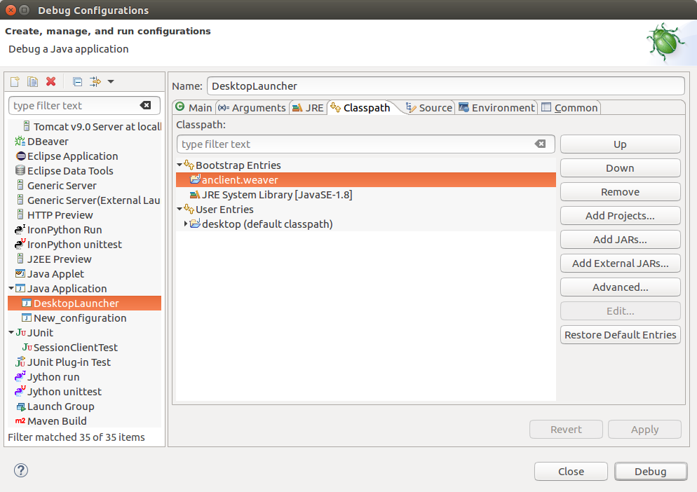

Start from sources¶
Clone project:
git clone https://github.com/odys-z/wordnet-weaver.git wnw
Import wn-server¶
In Eclipse (tested on Oxygen):
import -> existing maven project -> browse to file://wnw/wn-serv
Import anclient.weaver¶
In Eclipse (tested on Oxygen):
import -> existing maven project -> browse to file://wnw/lib/anclient
Import normod¶
The normod is a libGDX gradle project with sub-prorjects created with gdx-setup.
The default gradle project is been set using gradle wrapper’s local mode. If your need a newer version, or using gradle online mode, change this file:
wnw/normode/gradle/wrapper/gradle-wrapper.properties
comment out line 5 and use this line:
distributionUrl=https\://services.gradle.org/distributions/gradle-5.4.1-bin.zip
If using local mode, the gradle binary zip must been downloaded and saved locally, and the file path needing to be changed in configure file.
Gradle.bin.zip can be download from gradle home page.
To import normod, in Eclipse:
import -> existing gradle project -> browse to wnw/normode
Note: According to the author’s experience, you better run desktop project in Eclipse and run Android project from Android Studio.
Note
The normal project depends on Ashley and [Universal-tween-engine](https://github.com/AurelienRibon/universal-tween-engine). Both have some problem for newest GDX version to depends on. Have to be installed in local maven repository.
To install Ashley locally, see Ashely issue #279.
To install Universal-tween-engine, run it’s gradle task.
If Eclipse doesn’t recognize dependency class, this may help:
right click build.gradle -> gradle -> refresh project
Troublshootings¶
Class of Depending Project not Found¶
Error:
When running desktop, report error message like:
Exception in thread "LWJGL Application" com.badlogic.gdx.utils.GdxRuntimeException: java.lang.NoClassDefFoundError: io/oz/wnw/my/ISettings
at com.badlogic.gdx.backends.lwjgl.LwjglApplication$1.run(LwjglApplication.java:135)
Caused by: java.lang.NoClassDefFoundError: io/oz/wnw/my/ISettings
...
Cause:
The normode/core gradle sub-project depends on another maven project, anclient.weaver. The desktop application can’t find it’s class in run time environment.
Shooting:
In core/gradle.build, add compile dependency after applied Java plugin. ( Otherwise the compile command will failed.)
dependencies {
compile 'io.github.odys-z:anclient.weaver:0.0.1-SNAPSHOT'
}
Update anclient.weaver dependency or install it to local repository:
mvn install
then have normal/gradle.build use mavenLocal:
repositories {
mavenLocal()
...
}
Now the gradlew run task should start the desktop application.
When using Eclipse to debug, the depending project must been added to runtime classpath.
Installing Universal-tween-engine on Ubuntu¶
Error
Gradle complain about command not found while installing to local repository.
Cause:
The gradle task script can’t do the job.
Shooting:
Try this [modified build.gradle version](https://github.com/odys-z/universal-tween-engine/blob/master/build.gradle)